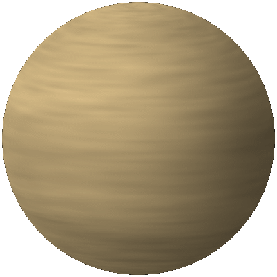

Venus is the second planet from the Sun, and Earth's closest planetary neighbor. Venus is the third brightest object in the sky after the Sun and Moon. Venus spins slowly in the opposite direction from most planets.
Venus is similar in structure and size to Earth, and is sometimes called Earth's evil twin. Its thick atmosphere traps heat in a runaway greenhouse effect, making it the hottest planet in our solar system with surface temperatures hot enough to melt lead — about 872 degrees Fahrenheit (467 Celsius). And the atmospheric pressure at the surface is about 93 times what it is at sea level on Earth. Below Venus' dense, persistent clouds, the surface has volcanoes and deformed mountains.
Namesake
The ancient Romans could easily see seven bright objects in the sky: the Sun, the Moon, and the five brightest planets — Mercury, Venus, Mars, Jupiter, and Saturn. They named the objects after their most important gods.
Venus is named for the ancient Roman goddess of love and beauty, known as Aphrodite to the ancient Greeks. Most features on Venus are named for women. It is the only planet named after a female god.
Potential for life
Thirty miles up (about 50 kilometers) from the surface of Venus, temperatures range from 86 to 158 degrees Fahrenheit (30 to 70 Celsius). This range could accommodate Earthly life, such as extremophile microbes, and atmospheric pressure at that height is similar to what we find at Earth's surface.
At the tops of Venus' clouds, whipped around the planet by winds measured as high as 224 mph (360 kph), we find another transformation. Persistent, dark streaks appear. Scientists are so far unable to explain why these streaks remain stubbornly intact even amid hurricane-force winds. They also have the odd habit of absorbing ultraviolet radiation.
The most likely explanations focus on fine particles, ice crystals, or even a chemical compound called iron chloride. Although it is much less likely, another possibility considered by scientists who study astrobiology is that these streaks could be made up of microbial life, Venus-style. Astrobiologists note that ring-shaped linkages of sulfur atoms, known to exist in Venus' atmosphere, could provide microbes with a kind of coating that would protect them from sulfuric acid. These chemical cloaks would also absorb potentially damaging ultraviolet light and re-radiate it as visible light.
Some of the Russian Venera probes did detect particles in Venus' lower atmosphere about a micron in length — roughly the same size as a bacterium on Earth.
None of these findings provide compelling evidence for the existence of life in Venus' clouds. But the questions they raise, along with Venus' vanished ocean, its violently volcanic surface, and its hellish history, make a compelling case for missions to investigate our temperamental sister planet.
Size and distance
Venus orbits the Sun from an average distance of 67 million miles (108 million kilometers), or 0.72 astronomical units. Sunlight takes about six minutes to travel from the Sun to Venus, compared to about eight minutes for the Sun and Earth.
The planet is nearly as big around as Earth. Its diameter at the equator is about 7,521 miles (12,104 kilometers), versus 7,926 miles (12,756 kilometers) for Earth. From Earth, Venus is the brightest object in the night sky after our own Moon. The ancients gave it great importance in their cultures, even thinking it was two objects: a morning star and an evening star.
Because Venus' orbit is closer to the Sun than ours, the two planets never stray far from each other from our viewpoint. The ancient Egyptians and Greeks saw Venus in two guises: first in one orbital position, seen in the morning, then another in the evening, just at different times of the year.
At its nearest to Earth, Venus is about 24 million miles away (about 38 million kilometers). But most of the time the two planets are farther apart. The maximum distance between Venus and Earth is about 162 million miles (261 million kilometers). Mercury, the innermost planet, actually spends more time in Earth's proximity than Venus does.
Through binoculars or a telescope, watched over many months, Venus shows phases just like our Moon — full, half, quarter, and so on. The complete cycle from new to full takes 584 days, while our Moon takes just a month. The phases of Venus, first observed by Galileo through his telescope, provided the key scientific proof for the Copernican heliocentric model of the solar system.
Orbit and rotation
Spending a day on Venus would be a disorienting experience, assuming your spacecraft or spacesuit could protect you from the extreme heat and crushing air pressure. Your day would be 243 Earth days long — longer even than a Venus year, one trip around the Sun, which takes only 225 Earth days. Because of the planet's extremely slow rotation, sunrise to sunset would take 117 Earth days. And the Sun would rise in the west and set in the east, because Venus spins backward compared to Earth.
There is no seasonal relief from the unrelenting temperatures. On Earth, with its spin axis tilted by about 23 degrees, we experience summer when our hemisphere receives the Sun's rays more directly. Venus' very slight tilt is only three degrees, too little to produce noticeable seasons.
Moons
Venus is one of only two planets in our solar system without a moon, but it does have a quasi-satellite officially named Zoozve. This object was discovered on Nov. 11, 2002, by Brian Skiff at the Lowell Observatory Near-Earth-Object Search in Flagstaff, Arizona, a NASA-funded project that ended in February 2008.
Quasi-satellites, sometimes called quasi-moons, are asteroids that orbit the Sun while staying close to a planet. A quasi-satellite's orbit is usually more oblong and less stable than the planet's orbit. In time, the shape of that orbit may change and the object may move away from the planet.
According to the International Astronomical Union, the organization that names space objects, Zoozve is the first-identified quasi-satellite of a major planet. Earth also has quasi-satellites, including a small asteroid discovered in 2016.
Based on its brightness, scientists at NASA's Jet Propulsion Laboratory estimate Zoozve ranges in size from 660 feet (200 meters) to 1,640 feet (500 meters) across.
Zoozve also orbits relatively close to Earth but poses no threat to our planet. For the next 175 years, the closest it will get is in 2149, when it will be about 2.2 million miles (3.5 million kilometers) away — about nine times the distance from Earth to the Moon.
How Zoozve got its name
After the discovery in 2002, Skiff reported his finding to the Minor Planet Center, which is funded by a Near-Earth Object Observations Program grant from NASA's Planetary Defense Coordination Office. At the time it was given the provisional name 2002 VE68. Skiff said he did not realize the asteroid's importance and forgot about the object until a radio show host reached out to him in 2023 about naming it Zoozve.
Soon after the discovery, a team of astronomers including Seppo Mikkola with the University of Turku in Finland and Paul Wiegert with the University of Western Ontario in London determined that the object was the first of its kind found. They think Zoozve may have been a companion to Venus for at least 7,000 years, and that Earth's gravity helped push it into its present orbit.
The name comes from a child's poster of the solar system. The artist, Alex Foster, saw 2002 VE68 on a list of solar system objects, wrote down "2002 VE," and then misread his own handwriting as "Zoozve."
Latif Nasser, co-host of the WNYC Studios show Radiolab, tracked down the source of the mistake with the help of Liz Landau, a NASA senior communications specialist. Nasser suggested that Skiff request the IAU officially name the asteroid Zoozve. Skiff agreed, and the name was approved in February 2024.
Rings
Venus has no rings.
Formation
How do habitable planets get their start? The close similarities of early Venus and Earth, and their very different fates, provide a kind of test case for scientists who study planet formation. Similar size, similar interior structure, both harboring oceans in their younger days. Yet one is now an inferno, while the other is the only known world to host abundant life. The factors that set these planets on almost opposite paths began, most likely, in the swirling disk of gas and dust from which they were born. Somehow, 4.6 billion years ago, that disk around our Sun accreted, cooled, and settled into the planets we know today. Better knowledge of the formation history of Venus could help us better understand Earth, and rocky planets around other stars.
Structure
If we could slice Venus and Earth in half, pole to pole, and place them side by side, they would look remarkably similar. Each planet has an iron core enveloped by a hot-rock mantle, and the thinnest of skins forms a rocky exterior crust. On both planets this thin skin changes form and sometimes erupts into volcanoes in response to the ebb and flow of heat and pressure deep beneath.
On Earth, the slow movement of continents over thousands and millions of years reshapes the surface, a process known as plate tectonics. Something similar might have happened on Venus early in its history. Today a key element of this process could be operating: subduction, the sliding of one continental plate beneath another, which can also trigger volcanoes. Subduction is believed to be the first step in creating plate tectonics.
NASA's Magellan spacecraft, which ended a five-year mission to Venus in 1994, mapped the broiling surface using radar. Magellan saw a land of extreme volcanism — a relatively young surface, recently reshaped in geologic terms, and chains of towering mountains.
Surface
Venus is the hottest planet in our solar system, with surface temperatures about 872 degrees Fahrenheit (467 Celsius). Atmospheric pressure at the surface squeezes with the same force as being more than 3,000 feet (930 meters) underwater on Earth. The Soviet Union sent a series of probes to Venus between 1961 and 1984 as part of its Venera program. Ten probes made it to the surface, and a few functioned briefly after landing. The longest survivor lasted two hours; the shortest, 23 minutes. Photos they snapped before the landers cooked show a barren, dim, rocky landscape and a sky that is likely some shade of sulfur yellow.
Volcanoes and tectonic forces appear to have erased most traces of the early surface of Venus. Newer computer models indicate the resurfacing may have happened piecemeal over an extended period. The average age of surface features could be as young as 150 million years, with some older surfaces mixed in.
Venus has valleys and high mountains dotted with thousands of volcanoes. Its surface features, most named for both real and mythical women, include Ishtar Terra, a rocky highland area around the size of Australia near the north pole, and an even larger, South-America-sized region called Aphrodite Terra that stretches across the equator. One mountain reaches 36,000 feet (11 kilometers), higher than Mt. Everest. Except for Earth, Venus has by far the fewest impact craters of any rocky planet.
Other notable features of the Venus landscape include:
- A volcanic crater named Sacajawea, for Lewis and Clark's Native American guide.
- A deep canyon called Diana, for the Roman goddess of the hunt.
- Pancake domes with flat tops and steep sides, as wide as 38 miles (62 kilometers), likely formed by the extrusion of highly viscous lava.
- Tick domes, odd volcanoes with radiating spurs that, from above, make them look like their blood-feeding namesake.
- Tesserae, terrain with intricate patterns of ridges and grooves that suggest the scorching temperatures make rock behave more like peanut butter beneath a thin, strong chocolate layer.
Atmosphere
Venus' atmosphere is one of extremes. With the hottest surface in the solar system apart from the Sun itself, Venus is hotter even than the innermost planet, charbroiled Mercury. The atmosphere is mostly carbon dioxide — the same gas that drives the greenhouse effect on both Venus and Earth — with dense clouds composed of sulfuric acid. Atmospheric pressure at the surface measures a crushing 93 times what it is at sea level on Earth. At the surface, the hot, high-pressure carbon dioxide behaves in a corrosive fashion, but higher up temperatures and pressure begin to ease.
Magnetosphere
Even though Venus is similar in size to Earth and has a similar-sized iron core, the planet does not have its own internally generated magnetic field. Instead, Venus has an induced magnetic field, created by the interaction of the Sun's magnetic field and the planet's outer atmosphere. Ultraviolet light from the Sun excites gases in Venus' outermost atmosphere; these electrically excited gases are called ions, and so this region is called the ionosphere, which Earth has as well. The solar wind, a million-mile-per-hour gale of electrically charged particles streaming continuously from the Sun, carries the Sun's magnetic field with it. When that field interacts with the electrically excited ionosphere of Venus, it induces a magnetic field there. This induced field envelops the planet and is shaped like an extended teardrop, or the tail of a comet, as the solar wind blows past Venus and outward into the solar system.